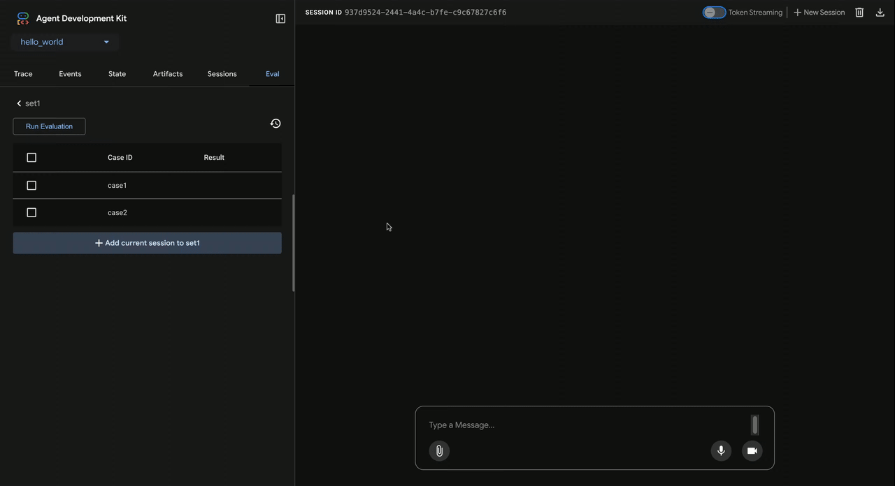

프로토타입이 아니라 프로덕션 에이전트를 구축하세요.
ADK는 신뢰할 수 있는 AI 에이전트를 엔터프라이즈 규모로 구축, 디버그, 배포할 수 있게 해 주는 오픈소스 에이전트 개발 프레임워크입니다. Python, TypeScript, Go, Java를 지원합니다.
from google.adk import Agent from google.adk.tools import google_search agent = Agent( name="researcher", model="gemini-flash-latest", instruction="You help users research topics thoroughly.", tools=[google_search], )
pip install google-adk
강력한 단순함. 확장을 염두에 둔 설계.
프롬프트와 도구 호출로 ADK 에이전트를 시작한 뒤, 멀티 에이전트 오케스트레이션, 그래프 기반 워크플로, 성능 평가, 그리고 세계적 수준의 엔터프라이즈 서비스로 배포까지 확장해 나가세요. 확장성, 신뢰성, 처리량을 모두 고려했습니다.
자세히 보기
열린 생태계. 모든 것을 연결하세요.
ADK의 개방형 통합 파트너를 통해 에이전트를 기존 애플리케이션, 다양한 AI 모델, 그리고 데이터 접근, 복원력 강화, 성능 평가를 위한 확장 기능과 연결할 수 있습니다.
자세히 보기
에이전트와 함께 에이전트를 만드세요.
ADK 에이전트는 사람이 쓰고 AI도 함께 쓰도록 설계되었습니다. AI 기반 개발 도구를 ADK 코딩 리소스와 연결해, 몇 초 만에 강력하고 유능한 에이전트를 만들어 보세요.
AI로 코딩하기느낌이 아니라 검증으로. 모든 것을 평가하세요.
ADK의 시각적 디버깅, 개방형 평가 프레임워크, 파트너 도구를 활용해 에이전트 실행 궤적 전체를 테스트하세요. 사용자 상호작용을 시뮬레이션하고, 맞춤형 성능 메트릭을 만들고, 평가 결과를 기준으로 에이전트를 개선할 수 있습니다.
자세히 보기
에이전트를 만들 준비가 되셨나요?
배우는 가장 좋은 방법은 직접 만들어 보는 것이라고 생각합니다. 그래서 개발 환경을 빠르게 구성하고 몇 분 안에 ADK 에이전트를 실행할 수 있는 가이드를 준비했습니다.
시작하기개발자 커뮤니티
차세대 프로덕션용 AI 에이전트를 만드는 성장하는 개발자 커뮤니티와 함께하세요. 그래프 워크플로 문제를 해결하고 싶든, 커스텀 Agent Skill을 공유하고 싶든, 프레임워크의 미래를 함께 만들고 싶든, 여러분의 참여를 기다립니다.
자주 묻는 질문
ADK에 대해 아직 궁금한 점이 있으신가요? 자주 묻는 질문에 대한 답변을 모았습니다.
ADK로 vibe coding 방식의 에이전트 개발도 가능한가요?
네. ADK는 사람이 작성해도 되고 AI가 함께 작성해도 되도록 설계되었습니다. 선호하는 코딩 도우미를 ADK 개발 Skills와 AI 인식형 개발 리소스에 연결하면, 몇 초 만에 에이전트를 생성할 수 있습니다. 자세한 내용은 AI로 코딩하기 가이드를 참고하세요.
ADK에서는 어떤 AI 모델을 사용할 수 있나요?
ADK는 거의 모든 생성형 AI 모델과 함께 사용할 수 있습니다. 이 프레임워크는 Gemini는 물론 다른 주요 모델에도 쉽게 접근할 수 있게 해 주며, 로컬에서 실행되는 모델을 포함한 여러 모델과 모델 제공업체에 연결할 수 있는 어댑터도 제공합니다. 엔터프라이즈 환경에서는 Google Cloud를 포함한 호스팅 서비스의 모델과 연결할 수 있으며, 이를 통해 다양한 모델을 사용하고 성능, 신뢰성, 보안, 접근, 안전, 비용을 세밀하게 관리할 수 있습니다.
ADK가 다른 점은 무엇인가요?
ADK는 적은 코드로 시작할 수 있으면서도 전문적이고 프로덕션 수준의 에이전트를 만들 수 있는 개방형 개발 프레임워크를 목표로 합니다. 빠르게 에이전트를 만들고, 필요에 따라 기능과 복잡성을 더해 갈 수 있도록 돕는 것이 우리의 목표입니다. ADK는 에이전트를 위한 기본 구조를 제공하며, 그 구조는 확장, 확장성 향상, 복잡하고 견고하며 유용한 에이전틱 시스템 구축이 가능하도록 유연하게 설계되어 있습니다. 또한 에이전트와 상호작용하기 위한 개발 도구와, ADK 에이전트를 만들 때 AI 기반 도구를 활용하는 방법도 제공하는 데 많은 노력을 기울였습니다. 에이전트 컨텍스트 관리에 대한 접근 방식과, 컨텍스트를 효율적으로 관리하면서도 필요에 맞게 조정할 수 있게 하는 점도 자랑스럽게 생각합니다. 더 자세한 내용은 개발자 문서에서 확인할 수 있습니다.
ADK는 컨텍스트 관리를 어떻게 처리하나요?
문자열을 단순히 이어 붙여 컨텍스트 창이 넘칠 때까지 버티는 도구와 달리, ADK는 컨텍스트를 관리합니다. 컨텍스트를 소스 코드처럼 다루어 세션, 메모리, 도구 출력, 아티팩트를 구조화된 뷰로 조립하고, 모든 토큰이 제 역할을 하도록 합니다. ADK는 관련 없는 이벤트를 자동으로 필터링하고, 오래된 대화 턴을 요약하며, 아티팩트를 지연 로드하고, 토큰 사용량을 추적합니다. 이 방식은 기본적으로 에이전트를 빠르고 효율적이며 안정적으로 유지하면서, 복잡한 작업에서는 컨텍스트 관리 방식을 세밀하게 조정할 수 있는 제어권도 제공합니다.
ADK는 프로덕션에 어떻게 배포하나요?
ADK는 어디서나 배포할 수 있는 유연성을 위해 설계되었습니다. 자체 인프라에서 컨테이너로 실행할 수도 있고, Google Cloud로의 기본 원클릭 배포를 활용할 수도 있습니다. Agent Runtime, Cloud Run 또는 GKE를 통해 Google Cloud에 배포하면, 에이전트는 관리형 인프라, 내장 인증, Cloud Trace 관측성, 엔터프라이즈급 보안을 즉시 갖추게 됩니다. 에이전트 코드를 한 줄도 바꾸지 않아도 됩니다. 로컬에서 개발하고, 전 세계로 확장하세요.
생성형 AI와 함께 사용할 때 언제 에이전트 프레임워크를 써야 하나요?
AI 채팅으로도 많은 작업을 수행할 수 있지만, 복잡한 다단계 프로세스를 처리해야 할 때는 에이전트 프레임워크가 최소한의 사람 개입으로 실행 가능한 관리형 반복 작업 구조를 제공합니다. ADK 같은 에이전트 프레임워크는 작업을 자동으로 시작하고, 여러 번의 반복 AI 모델 요청을 수행하고, 컨텍스트를 관리하고, 도구 호출을 처리하고, 데이터를 기록하고, 병렬 작업을 실행하고, 실패를 처리하고, 중단된 작업을 재개할 수 있습니다.